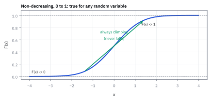
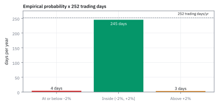
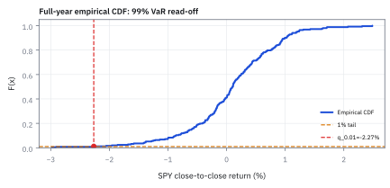

1.1 Random Variables and the Cumulative Distribution Function (CDF)
CDF ตอบคำถามเดียวว่า “โอกาสที่ค่าสุ่มจะไม่เกินเกณฑ์นี้มีเท่าไร” แล้วคำถามเรื่องช่วง หาง และระดับขาดทุนทุกแบบสร้างต่อจากคำตอบนี้
พอร์ตหุ้นมูลค่า \$50 ล้าน มีผลตอบแทนรายวันสิบวันล่าสุดเป็น −3%, −2%, −1%, −1%, 0%, 0%, +1%, +2%, +2%, +4% หัวหน้าฝ่ายความเสี่ยงหยิบมาหนึ่งวันแบบสุ่ม แล้วถามสองข้อ: โอกาสที่วันนั้น “ขาดทุนตั้งแต่ 2% ขึ้นไป” (เสียตั้งแต่ \$1 ล้าน) มีเท่าไร และโอกาสที่วันนั้นกำไรเกิน 2% มีเท่าไร
ลองตอบก่อนเปิดเฉลย
“ขาดทุนตั้งแต่ 2%” คือผลตอบแทนไม่เกิน −2% วันที่เข้าเงื่อนไขมีสองวัน คือ −3% กับ −2% จึงได้ $2/10=20\%$ ถ้านับแค่วัน −3% จะได้ 10% ซึ่งผิด เพราะคำว่า “ตั้งแต่” รวมวันที่เสียพอดี 2% ด้วย ส่วนวันที่กำไรเกิน 2% มีวันเดียวคือ +4% จึงได้ 10% วัน +2% สองวันไม่นับ เพราะ “เกิน” ไม่รวมค่าที่เท่ากับเกณฑ์ ทั้งสองคำตอบอ่านได้จากฟังก์ชันเดียวที่หน้านี้จะสร้าง คือ CDF
ภาพรวมก่อนลงสูตร
ก่อนสุ่ม เรายังไม่รู้ว่าจะได้วันไหน แต่รู้ว่าแต่ละวันให้ตัวเลขอะไร กฎที่แปลงผลสุ่มแต่ละแบบ (วันที่หยิบได้) ให้เป็นตัวเลขหนึ่งตัว (ผลตอบแทนของวันนั้น) เรียกว่า random variable เขียนด้วยตัวใหญ่ $X$ ส่วนตัวเล็ก $x$ คือเกณฑ์ที่เราตั้งเองเพื่อถาม เช่น −2%
คำถามเรื่องความเสี่ยงแทบทุกข้อเขียนได้ในรูป “โอกาสที่ $X$ ไม่เกิน $x$” ถ้าจดคำตอบนี้ไว้สำหรับทุกเกณฑ์ $x$ จะได้ฟังก์ชันหนึ่งตัวชื่อ cumulative distribution function หรือ CDF ฟังก์ชันนี้มีให้ random variable ทุกชนิด ทั้งแบบที่ค่านับไล่ได้และแบบต่อเนื่อง วิชาความน่าจะเป็นจึงนิยาม CDF เป็นอย่างแรก
หน้านี้จะสร้าง CDF ด้วยการนับ ใช้มันตอบคำถามเรื่องช่วง จุดเดียว และหางขวา อ่านกลับจากโอกาสไปหาเกณฑ์ที่เรียกว่า quantile แล้วใช้วิธีเดียวกันกับผลตอบแทนจริงของ SPY 252 วันเพื่อหา VaR
รูป — จุดสิบวันกับบันไดยอดสะสม
ศัพท์ที่ใช้ในหน้านี้
- random variable
- กฎที่แปลงผลสุ่มแต่ละแบบให้เป็นตัวเลข เช่น วันที่สุ่มได้ → ผลตอบแทนของวันนั้น ใช้เพื่อให้ถามเรื่องโอกาสด้วยตัวเลขแทนคำบรรยาย
- CDF (cumulative distribution function)
- ฟังก์ชัน $F(x)=P(X\le x)$ บอกโอกาสสะสมจนถึงเกณฑ์ $x$ ใช้ตอบคำถามช่วง จุดเดียว และหาง
- ECDF (empirical CDF)
- CDF ที่ได้จากการนับข้อมูลจริง คือสัดส่วนข้อมูลที่ไม่เกินเกณฑ์ ใช้แทน CDF ที่ไม่รู้ เมื่อเชื่อว่าข้อมูลเก่าเป็นตัวแทนของสิ่งที่จะเกิด
- quantile
- เกณฑ์ที่น้อยที่สุดซึ่งยอดสะสมถึงสัดส่วนที่กำหนด เป็นการอ่าน CDF กลับทาง ใช้ตั้งระดับขาดทุนจากระดับโอกาส
- tail (หาง)
- ปลายของ distribution เช่น หางซ้ายคือวันที่ขาดทุนหนัก เป็นส่วนที่ผู้ดูแลความเสี่ยงสนใจที่สุด
- VaR (Value at Risk)
- ระดับขาดทุนในช่วงเวลาที่กำหนด ซึ่งจะถูกเกินด้วยโอกาสไม่เกินระดับที่ตั้ง เช่น 1% ใช้เป็นตัวเลขกำกับวงเงินความเสี่ยง
สัญลักษณ์ ความหมาย และหน่วย
| สัญลักษณ์ | ความหมาย | หน่วย |
|---|---|---|
| $X$ | ผลตอบแทนของวันที่สุ่มได้ ยังไม่รู้ค่าก่อนสุ่ม | % |
| $x$, $a$, $b$ | เกณฑ์ที่เราตั้งเพื่อถาม | % |
| $F(x)$ | โอกาสที่ $X$ ไม่เกิน $x$ | ไม่มีหน่วย อยู่ระหว่าง 0 กับ 1 |
| $F(a^-)$ | ยอดสะสมก่อนถึง $a$ โดยยังไม่รวมค่า $a$ เอง | ไม่มีหน่วย |
| $\widehat F(x)$, $N_x$, $n$ | ECDF, จำนวนข้อมูลที่ไม่เกิน $x$, จำนวนข้อมูลทั้งหมด | ไม่มีหน่วย, วัน, วัน |
| $q_\alpha$ | quantile ที่ระดับโอกาส $\alpha$ | % |
ขั้นที่ 1 — CDF คือยอดนับสะสม
เริ่มจากนิยาม เพราะทุกคำถามที่ตามมาจะประกอบจากชิ้นนี้ การหยิบวันแบบสุ่มให้แต่ละวันมีโอกาส 1/10 เท่ากัน โอกาสที่ $X$ ไม่เกินเกณฑ์จึงเท่ากับจำนวนวันที่ไม่เกินเกณฑ์หารด้วยสิบ
CDF เก็บ “ยอดรวมถึงเกณฑ์” ไม่ใช่ “จำนวนที่เท่ากับเกณฑ์” ที่ 0% เรานับวันขาดทุนสี่วันรวมกับวันที่เป็นศูนย์อีกสองวัน จึงได้หกวัน จุดที่คนมักสะดุดคือ $F(3\%)$: ไม่มีวันไหนได้ 3% พอดี แต่คำถาม “ไม่เกิน 3%” ยังมีคำตอบ คือเก้าวันเดิม เกณฑ์จึงเป็นเลขใดก็ได้บนเส้นจำนวน ไม่จำเป็นต้องเป็นค่าที่มีในข้อมูล
| เกณฑ์ $x$ | วันที่ไม่เกินเกณฑ์ | $F(x)$ |
|---|---|---|
| ต่ำกว่า −3% | 0 | 0 |
| −3% | 1 | 0.10 |
| −2% | 2 | 0.20 |
| −1% | 4 | 0.40 |
| 0% | 6 | 0.60 |
| +1% | 7 | 0.70 |
| +2% | 9 | 0.90 |
| +4% ขึ้นไป | 10 | 1.00 |
ขั้นที่ 2 — โอกาสของช่วงคือผลต่างของความสูงสองตำแหน่ง
คำถามถัดไปบนโต๊ะมักเป็นช่วง เช่น “วันปกติที่ขยับไม่เกินสองเปอร์เซ็นต์ทั้งสองทาง” มีกี่เปอร์เซ็นต์ เราไม่ต้องนับใหม่ เพราะยอดสะสมสองตำแหน่งให้คำตอบได้
ความคิดคือการแบ่งกอง: วันที่ไม่เกิน $b$ แบ่งได้เป็นสองกองที่ไม่ซ้อนกัน คือกองที่ไม่เกิน $a$ กับกองที่อยู่เหนือ $a$ แต่ไม่เกิน $b$ เมื่อสองกองไม่มีวันซ้ำกัน โอกาสจึงบวกกันได้ ย้ายข้างแล้วได้สูตรผลต่าง
ระวังขอบซ้าย: วันที่เท่ากับ $a$ พอดีอยู่ในกองแรกแล้ว จึงถูกลบทิ้ง ช่วงที่ได้จึงเป็น “มากกว่า −2%” ไม่ใช่ “ตั้งแต่ −2%” ถ้าโจทย์ต้องการรวมวัน −2% ด้วย ต้องบวกโอกาสของจุดนั้นคืน $0.1$ คำตอบจะเปลี่ยนจาก 70% เป็น 80%
ขั้นที่ 3 — จุดเดียวคือความสูงของขั้น หางขวาคือหนึ่งลบยอดสะสม
คำว่า “เท่ากับ 0%” “ไม่เกิน 0%” และ “มากกว่า 2%” เป็นคนละคำถาม เราต้องมีชื่อเรียกระดับบันไดก่อนกระโดด จึงเขียน $F(a^-)$ แทนยอดสะสมของทุกค่าที่น้อยกว่า $a$ โดยยังไม่รวม $a$
วัน 0% สองวันทำให้บันไดกระโดดจาก 0.4 เป็น 0.6 ความสูงของการกระโดดจึงเท่ากับโอกาสของค่า 0% พอดี ส่วนหางขวาใช้หลักแบ่งกองเดิม: ทุกวันอยู่ในกอง “ไม่เกิน $b$” หรือกอง “เกิน $b$” อย่างใดอย่างหนึ่ง สองกองรวมกันเป็นหนึ่ง จึงได้หนึ่งลบ CDF
บรรทัดสุดท้ายแสดงจุดที่พลาดง่าย: “ตั้งแต่ 2%” ต้องเก็บวัน +2% ไว้ จึงลบด้วยยอดก่อนถึง 2% ซึ่งเท่ากับ 0.7 ไม่ใช่ 0.9 คำตอบเปลี่ยนจาก 10% เป็น 30% เพราะมีสองวันยืนอยู่บนเกณฑ์พอดี
รูป — อ่านช่วง จุดเดียว และหางขวาจากบันไดเดียว
ขั้นที่ 4 — สามสมบัติที่ CDF ทุกตัวต้องมี
ก่อนใช้ CDF จากระบบใดก็ตาม ควรรู้ว่ามันต้องหน้าตาแบบไหน ตารางที่ผิดสมบัติเหล่านี้แปลว่ามีข้อผิดพลาดในการนับหรือการบันทึก สมบัติทั้งสามมาจากเหตุผลแบ่งกองเดิม ไม่ต้องจำแยก
ข้อแรก: เลื่อนเกณฑ์ไปทางขวา วันที่นับไว้แล้วยังอยู่ครบ มีแต่วันใหม่ที่อาจถูกนับเพิ่ม CDF จึงขึ้นหรือคงที่ ไม่มีวันลง แกนนอนของกราฟนี้คือเกณฑ์ ไม่ใช่เวลา จึงไม่ขึ้นลงเหมือนกราฟราคา
ข้อสอง: เกณฑ์ต่ำมากไม่นับอะไรเลย เกณฑ์สูงมากนับครบทุกวัน ในข้อมูลสิบวัน CDF แตะ 0 และ 1 จริง ๆ แต่แบบจำลองที่ค่าเป็นไปได้ไกลไม่สิ้นสุด เช่น normal distribution จะเข้าใกล้ 0 และ 1 โดยไม่แตะ จึงเขียนเป็น limit
ข้อสามบอกว่าจุดทึบอยู่บนขั้นบน: เพราะเครื่องหมาย $\le$ รวมค่าที่เท่ากับเกณฑ์ พอเกณฑ์มาถึง $a$ ยอดก็กระโดดทันที เข้าหา $a$ จากทางขวาจึงได้ค่าเดียวกับ $F(a)$ ส่วนเข้าหาจากทางซ้ายได้ $F(a^-)$ ซึ่งต่างกันเท่ากับโอกาสของจุด $a$
รูป — CDF แบบขั้นบันไดกับแบบต่อเนื่อง

ตัวแปรที่ค่านับไล่ได้มีโอกาสกองอยู่ที่บางจุด CDF จึงเป็นขั้นบันได ส่วนแบบจำลองต่อเนื่องที่มี density ไม่มีโอกาสกองอยู่ที่จุดเดียว CDF จึงขึ้นอย่างราบเรียบ ทั้งสองแบบตอบคำถามเดียวกันคือ $P(X\le x)$ และทั้งสองแบบไม่เคยลดลง เรื่องแบบต่อเนื่องอยู่ในหน้า continuous random variables และ PDF
ขั้นที่ 5 — อ่านกลับทาง: จากระดับโอกาสไปหาเกณฑ์
บางครั้งโจทย์ให้โอกาสแล้วถามเกณฑ์ เช่น “วันแย่ที่สุด 25% ของวันเริ่มที่ผลตอบแทนเท่าไร” นี่คือ quantile เราใช้กติกาว่า $q_\alpha$ คือเกณฑ์ที่น้อยที่สุดซึ่ง $F$ ไปถึงระดับ $\alpha$ แล้ว ต้องระบุกติกาให้ชัด เพราะบันไดมีช่วงแบนและช่วงกระโดด
ความคิดคือลากเส้นแนวนอนที่ระดับ $\alpha$ ไปทางขวาจนชนบันได แล้วอ่านเกณฑ์ตรงจุดชน ที่ระดับ 0.25 เส้นไม่ชนช่วงแบนใดเลย แต่ชนช่วงกระโดดที่ −1% ซึ่งพาบันไดจาก 0.2 ขึ้น 0.4 จึงได้ −1% ระดับ 0.5 ชนช่วงกระโดดที่ 0% จึงได้ 0% ซึ่งคือ median ของข้อมูลชุดนี้
กรณีที่ต้องคิดคือเส้นทับช่วงแบนพอดี เช่น $\alpha=0.10$ ทับขั้นที่ความสูง 0.1 ตั้งแต่ −3% ถึงก่อน −2% กติกา “เกณฑ์ที่น้อยที่สุด” เลือกจุดเริ่มของช่วงแบน คือ −3%
รูป — ลากเส้นจากระดับโอกาสไปชนบันได
ขั้นที่ 6 — ใช้วิธีเดียวกันกับข้อมูลจริง: ECDF ของ SPY
โจทย์ให้อะไรมาบ้าง: พอร์ต \$50 ล้านที่ขยับตาม SPY (ETF ที่ติดตามดัชนี S&P 500) และตารางสรุปผลตอบแทนรายวันปี 2024 จำนวน 252 ค่า ปี 2024 ตลาดหุ้นนิวยอร์กเปิดทำการ 252 วัน คือ 366 วันในปี ลบเสาร์อาทิตย์ 104 วัน และวันหยุดตลาด 10 วัน ผลตอบแทนแบบราคาปิดต่อราคาปิดหนึ่งค่าใช้ราคาปิดสองวัน ผลตอบแทนครบ 252 วันจึงต้องใช้ราคาปิด 253 ค่า รวมราคาปิดวันสุดท้ายของปี 2023 ด้วย เมื่อไม่รู้ CDF จริงของวันพรุ่งนี้ เราใช้สัดส่วนจากข้อมูล เรียกว่า ECDF โดยให้ $N_x$ เป็นจำนวนวันที่ผลตอบแทนไม่เกิน $x$
| เกณฑ์ผลตอบแทน | จำนวนวันที่ไม่เกินเกณฑ์ $N_x$ | $\widehat F(x)$ |
|---|---|---|
| −2.9124% (แย่อันดับสอง) | 2 | $2/252\approx0.00794$ |
| −2.2663% (แย่อันดับสาม) | 3 | $3/252\approx0.01190$ |
| −2.0579% (แย่อันดับสี่) | 4 | $4/252\approx0.01587$ |
| −2.00% | 4 | $4/252\approx0.01587$ |
| 0% | 104 | $104/252\approx0.41270$ |
| +2.00% | 249 | $249/252\approx0.98810$ |
คำตอบ: ปี 2024 มีวันที่ขยับอยู่ในช่วงมากกว่า −2% แต่ไม่เกิน +2% จำนวน 245 วัน หรือ 97.22% และมีวันที่กำไรเกิน 2% สามวัน หรือ 1.19% สูตรผลต่างและหนึ่งลบที่สร้างกับข้อมูลสิบวันใช้ได้ทุกตัว เปลี่ยนแค่ตัวหารจาก 10 เป็น 252 หมวกบนใน $\widehat P$ เตือนว่านี่คือสัดส่วนที่นับจากอดีต การใช้เป็นโอกาสของวันพรุ่งนี้ต้องเชื่อเพิ่มอีกข้อว่าตลาดยังเป็นแบบเดิม
ตรวจเองใน 10 วินาที: สามกองต้องรวมได้ครบ: ไม่เกิน −2% สี่วัน ช่วงกลาง 245 วัน และเกิน +2% สามวัน $4+245+3=252$ พอดี ไม่มีวันหายหรือถูกนับซ้ำ
รูป — สามกองที่ต้องรวมได้ 252 วัน

แท่งทั้งสามแบ่งวันซื้อขายปี 2024 ออกเป็นกองที่ไม่ซ้อนกัน ได้ 4, 245 และ 3 วัน แท่งกลางสูงกว่าแท่งข้างหลายสิบเท่า ซึ่งเป็นภาพปกติของผลตอบแทนรายวัน: วันส่วนใหญ่ขยับน้อย วันที่ขยับเกินสองเปอร์เซ็นต์มีไม่กี่วัน แต่เป็นวันที่กำหนดความเสี่ยง
ขั้นที่ 7 — quantile 1% ของ SPY กลายเป็น VaR ได้อย่างไร
ฝ่ายความเสี่ยงอยากได้ตัวเลขเดียวว่า “วันแย่ระดับ 1 ใน 100 เสียประมาณเท่าไร” นี่คือการอ่าน ECDF กลับทางด้วยกติกาเดียวกับ quantile ในข้อมูลสิบวัน แล้วแปลงเปอร์เซ็นต์เป็นเงิน ให้ VaR เป็นจำนวนเงินขาดทุนที่เขียนเป็นเลขบวก
ระดับ 1% ของ 252 วันคือ 2.52 วัน ซึ่งไม่ใช่จำนวนเต็ม ยอดสะสมถึงวันแย่อันดับสองยังได้แค่ 0.79% ยังไม่ถึง 1% พอนับถึงอันดับสามได้ 1.19% จึงผ่านระดับแล้ว กติกา “เกณฑ์ที่น้อยที่สุดที่ถึงระดับ” จึงเลือกวันแย่อันดับสาม ที่ −2.2663% แล้วคูณกับมูลค่าพอร์ต ได้ historical VaR 99% รายวันประมาณ \$1.13 ล้าน
ตัวเลขนี้ไม่ใช่ขาดทุนสูงสุด ปี 2024 มีสองวันที่เสียมากกว่านี้ แค่วันแย่อันดับสองก็เสีย $0.029124\times\$50$ ล้าน ≈ \$1.46 ล้านแล้ว VaR บอกว่าเส้นอยู่ตรงไหน ไม่บอกว่าข้ามเส้นแล้วจะเสียอีกเท่าไร คำถามหลังเป็นงานของ expected shortfall
รูป — จุดตัดหางซ้ายของ SPY ที่ระดับ 1%

เริ่มที่ระดับ 1% บนแกนตั้ง แล้วเลื่อนไปทางขวาจนถึงเกณฑ์แรกที่ ECDF ขึ้นถึงระดับนั้น ซึ่งคือวันแย่อันดับสาม บันไดกระโดดข้ามเส้น 1% เพราะหนึ่งวันเพิ่มยอดสะสมทีละ 1/252 ≈ 0.40% ไม่มีเกณฑ์ใดให้ 1% พอดี
จุดที่พลาดแล้วได้คำตอบผิดโดยไม่รู้ตัว
สับสน “ตั้งแต่” กับ “เกิน”: “ขาดทุนตั้งแต่ 2%” คือ $X\le-2\%$ ได้ 20% ถ้าเขียนเป็น $X\lt-2\%$ จะได้ 10% คำตอบต่างกันเท่าตัวเพราะมีวันหนึ่งยืนอยู่บนเกณฑ์พอดี ข้อมูลรายวันที่ปัดเศษเป็นสองตำแหน่งมีค่าซ้ำบนเกณฑ์กลม ๆ บ่อยกว่าที่คิด
อ่านความสูงของบันไดเป็นโอกาสของจุด: ที่ 0% บันไดสูง 0.6 แต่โอกาสได้ 0% พอดีคือ 0.2 ความสูงคือยอดสะสม โอกาสของจุดคือขนาดของการกระโดด
โปรแกรมต่างกัน quantile ต่างกัน: บางโปรแกรมแทรกค่าระหว่างอันดับ เช่น ใช้ตำแหน่ง $1+(252-1)(0.01)=3.51$ แล้วอ่านระหว่างวันแย่อันดับสาม (−2.2663%) กับอันดับสี่ (−2.0579%) ได้ $-2.2663+0.51(0.2084)=-2.160016\%$ หรือ VaR \$1,080,008 ต่างจาก \$1,133,150 ราว \$53,000 ทั้งที่ใช้ข้อมูลเดียวกัน รายงาน VaR จึงต้องบอกวิธีหา quantile ด้วย
ถือว่าอดีตคืออนาคต: ECDF ของปีที่ตลาดสงบให้ VaR ต่ำ ถ้าปีหน้าความผันผวนสูงขึ้น วันที่ข้ามเส้นจะมากกว่า 1% มาก การตรวจว่า VaR ถูกข้ามบ่อยเกินไปหรือไม่เป็นงานของ VaR backtesting
ใช้ทำอะไรบนโต๊ะจริง
Historical VaR ที่ธนาคารและกองทุนรายงานทุกวันคือขั้นตอนในหน้านี้ทั้งหมด: นำ P&L ย้อนหลังของพอร์ตปัจจุบันมาเรียง นับ แล้วอ่าน quantile ข้อดีคือไม่ต้องสมมติว่าผลตอบแทนเป็น normal ข้อเสียคือหางซ้าย 1% ของข้อมูลหนึ่งปีมีแค่สองสามวัน ตัวเลขจึงขยับมากเมื่อวันแย่วันเดียวหลุดออกจากหน้าต่างข้อมูล ธนาคารจึงมักใช้หน้าต่าง 250 วันทำการ (ประมาณหนึ่งปีตามกติกา Basel) หรือยาวกว่านั้น และรายงานคู่กับ expected shortfall
โจทย์ตรวจความเข้าใจ
1. เพิ่มผลตอบแทน −4% อีกหนึ่งวันเข้าไปในข้อมูลสิบวัน (รวมเป็นสิบเอ็ดวัน) ECDF ที่ −2% เป็นเท่าไร และสัดส่วนของช่วงมากกว่า −2% แต่ไม่เกิน +2% เป็นเท่าไร
เฉลย
วันที่ไม่เกิน −2% เพิ่มจากสองเป็นสามวัน ตัวหารเพิ่มเป็น 11 จึงได้ $\widehat F(-2\%)=3/11\approx0.273$ ส่วนยอดถึง +2% เป็น $10/11$ ช่วงกลางจึงเป็น $10/11-3/11=7/11\approx0.636$ จำนวนวันในช่วงกลางยังเป็นเจ็ดวันเท่าเดิม แต่สัดส่วนลดจาก 0.7 เพราะตัวหารโตขึ้น ทุกครั้งที่เพิ่มข้อมูลต้องตรวจทั้งตัวเศษและตัวหาร
2. จากข้อมูลสิบวันเดิม หา $q_{0.10}$ และ $q_{0.30}$ ด้วยกติกา “เกณฑ์ที่น้อยที่สุดซึ่ง $F$ ถึงระดับแล้ว”
เฉลย
$F(-3\%)=0.10$ ถึงระดับ 0.10 พอดีที่จุดแรกของข้อมูล จึงได้ $q_{0.10}=-3\%$ ส่วนระดับ 0.30: $F(-2\%)=0.20$ ยังไม่ถึง และ $F(-1\%)=0.40$ ถึงแล้ว จึงได้ $q_{0.30}=-1\%$ สังเกตว่า $q_{0.25}$ กับ $q_{0.30}$ เท่ากัน เพราะทั้งสองระดับชนช่วงกระโดดเดียวกันที่ −1%
3. random variable $Y$ มีค่าได้แค่ −1, 1 และ 2 โดย $F(-1)=0.3$, $F(0)=0.3$, $F(1)=0.8$ และ $F(2)=1$ หา $P(Y=0)$, $P(Y=1)$ และ $P(0\lt Y\le 2)$
เฉลย
บันไดไม่กระโดดที่ 0 เพราะ $F(0)=F(-1)=0.3$ และไม่มีค่าใดอยู่ระหว่าง −1 กับ 0 จึงได้ $P(Y=0)=0$ ถ้าอ่าน $F(0)=0.3$ เป็นโอกาสของศูนย์ก็ผิดทันที ที่ 1 บันไดกระโดดจาก 0.3 เป็น 0.8 จึงได้ $P(Y=1)=0.5$ ส่วนช่วง $P(0\lt Y\le2)=F(2)-F(0)=1-0.3=0.7$ ซึ่งรวมโอกาสของ 1 (0.5) กับของ 2 (0.2)
คำนวณซ้ำด้วย JavaScript
เปิดดูโค้ด
const r = [-3, -2, -1, -1, 0, 0, 1, 2, 2, 4]; // ผลตอบแทน (%)
const F = x => r.filter(v => v <= x).length / r.length;
const Fminus = x => r.filter(v => v < x).length / r.length;
console.log(F(-2)); // 0.2
console.log(F(2) - F(-2)); // 0.7 (ช่วง)
console.log(F(0) - Fminus(0)); // 0.2 (จุด 0%)
console.log(1 - F(2)); // 0.1 (หางขวา)
console.log(1 - Fminus(2)); // 0.3 (ตั้งแต่ +2%)
// quantile: เกณฑ์ที่น้อยที่สุดซึ่ง F ถึงระดับ a
const quantile = (data, a) => {
const s = [...data].sort((u, v) => u - v);
return s[Math.ceil(a * s.length) - 1];
};
console.log(quantile(r, 0.25), quantile(r, 0.5)); // -1 0
// SPY 2024 จากตารางสรุป
console.log((249 - 4) / 252, 3 / 252); // 0.9722 0.0119
console.log(Math.ceil(0.01 * 252)); // 3 → วันแย่อันดับสาม
console.log(0.022663 * 50e6); // ≈ 1133150สิ่งที่ควรตอบได้หลังอ่าน
- random variable คือกฎที่แปลงผลสุ่มเป็นตัวเลข และ CDF คือ $F(x)=P(X\le x)$ ซึ่งรวมค่าที่เท่ากับเกณฑ์ด้วย
- ช่วงใช้ $F(b)-F(a)$ จุดเดียวใช้ขนาดการกระโดด $F(a)-F(a^-)$ และหางขวาใช้ $1-F(x)$ ทั้งหมดมาจากการแบ่งกองที่ไม่ซ้อนกัน
- CDF ไม่เคยลดลง เริ่มที่ 0 จบที่ 1 และจุดทึบอยู่บนขั้นบนเสมอ
- quantile คือการอ่าน CDF กลับทางด้วยกติกา “เกณฑ์ที่น้อยที่สุดที่ถึงระดับ” และ historical VaR 99% ของ SPY ปี 2024 บนพอร์ต \$50 ล้านได้ \$1,133,150 จากวันแย่อันดับสาม
- VaR ไม่ใช่ขาดทุนสูงสุด และตัวเลขเปลี่ยนตามวิธีหา quantile กับหน้าต่างข้อมูล
หน้าถัดไป discrete random variables และ PMF จะเปลี่ยนจากยอดสะสมมาแจกโอกาสให้แต่ละค่าโดยตรง แล้วจะเห็นว่าขนาดการกระโดดของบันไดในหน้านี้ก็คือ PMF นั่นเอง